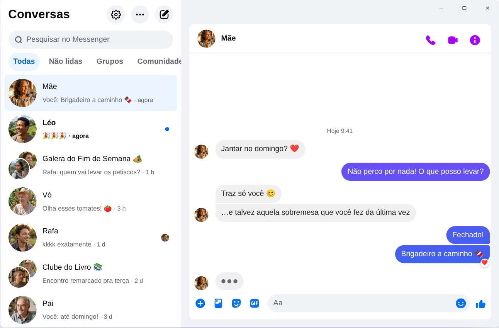

Chatpane / Windows
Atualizado em novembro de 2026
Como ter o Messenger no PC em 2026
A Meta encerrou o app do Messenger para Windows em 15 de dezembro de 2025, e o messenger.com agora manda você para o Facebook. Veja o que funciona hoje num PC ou notebook com Windows 10 ou 11.
Grátis e de código aberto · Windows 10 e 11 · Não é um app da Meta
Resposta rápida
Não existe mais um app oficial do Messenger para PC. A Meta tirou o app da Microsoft Store, e desde abril de 2026 o Messenger no computador só funciona em facebook.com/messages, dentro do Facebook.
Se você quer o Messenger numa janela só dele, sem o feed e sem os Reels, o Chatpane é um app gratuito e de código aberto para Windows que abre suas conversas e mais nada. É um projeto independente, não é da Meta.
Cuidado com o "Messenger para PC" dos sites de download
Vários sites de download ainda oferecem o instalador do Messenger 2250.1. É o app que a Meta encerrou em dezembro de 2025: ao abrir, ele só manda você para o Facebook. Não adianta instalar.
E nunca digite sua senha do Facebook num programa ou numa página que você não sabe de onde veio. Se alguém oferece um "Messenger para PC" com login próprio, desconfie.
O que aconteceu com o Messenger para Windows?
Em 2024 a Meta trocou o app de Windows por uma versão web empacotada. Em outubro de 2025 anunciou o fim do app e o tirou da Microsoft Store, e em 15 de dezembro de 2025 ele parou de funcionar. Em abril de 2026 o messenger.com também foi desativado. Datas e detalhes em o que aconteceu com o Messenger para PC.
Suas opções
Jeitos de usar o Messenger no Windows
O Chatpane no Windows
O Chatpane abre o mesmo Messenger que você vê no navegador, então suas conversas, grupos, chamadas e fotos estão todos lá e sincronizam com o celular. O que ele tira é o resto do Facebook.
- Só o Messenger. O feed, os Reels, o Marketplace e a busca do Facebook ficam escondidos.
- Notificações que resolvem. Responda, reaja, marque como lida ou silencie direto na notificação, sem abrir a janela. Bom para quem negocia no Marketplace e não quer deixar ninguém esperando.
- Barra de tarefas e bandeja. O número de mensagens não lidas no ícone, abrir junto com o Windows e continuar na bandeja ao fechar a janela.
- Privacidade. Esconda que você está digitando, esconda nomes e fotos ao compartilhar a tela, e bloqueie as requisições de análise do Facebook (ligado por padrão).
- No seu idioma. O Chatpane segue o idioma do computador, então os menus e as configurações aparecem em português.

Como instalar
- Baixe o instalador para Windows. Se o seu PC tem processador ARM, use o instalador ARM64.
- Abra o arquivo. Os instaladores do Chatpane para Windows ainda não têm assinatura digital, então o SmartScreen pode mostrar "O Windows protegeu o computador". Clique em "Mais informações" e depois em "Executar assim mesmo". Baixe o Chatpane só pelo chatpane.app ou pelo GitHub.
- Entre com a sua conta do Facebook de sempre. As conversas aparecem na hora.
Não quer instalar nada? A versão portátil (.zip) funciona sem instalador.
Perguntas frequentes
Dúvidas sobre o Messenger no PC
O Chatpane é grátis?
Sim. Não tem preço, assinatura nem anúncios. É de código aberto, com licença MIT, e o código está publicado no GitHub para qualquer um conferir.
É o app oficial do Messenger?
Não. O Chatpane é um projeto independente, sem ligação com a Meta. Ele mostra o Messenger de verdade, de facebook.com/messages, numa janela própria, então suas mensagens continuam passando pelo Messenger e valem os termos da Meta.
Funciona sem conta do Facebook?
Não. Desde abril de 2026, a Meta só deixa usar o Messenger sem conta do Facebook no app do celular. No computador, o Chatpane e qualquer outra opção precisam de uma conta que entre no facebook.com.
Funciona no Windows 10?
Sim, no Windows 10 e no 11. O Chatpane usa o Microsoft Edge WebView2, que já vem no Windows 11. No Windows 10, o instalador baixa o WebView2 se ele estiver faltando.
Dá para fazer chamada de vídeo?
Sim. É o Messenger completo, então chamadas de voz e de vídeo abrem numa janela própria, como no facebook.com.
Baixe o Chatpane
Gratuito e de código aberto. Baixa em segundos - são só uns 4 MB.
Mac Intel mais antigo? Intel .dmg
A lista completa com os checksums está no
GitHub
- ou brew install --cask kristofferR/tap/chatpane